使用代理窗口（预览版）
代理窗口是 VS Code 中的一个专用窗口，专为以代理为先的工作流而构建。它是 VS Code 编辑器窗口的自然补充：编辑器窗口针对单个工作区中的以代码为中心的工作进行了优化，而代理窗口则针对跨项目编排更高层次的任务进行了优化，以聊天和会话列表作为主要界面。
代理窗口让你能够从一个地方访问所有工作区，并让你能够在多个项目中并行运行和跟踪多个会话，而无需在单独的窗口中打开每个工作区。它与主 VS Code 窗口共享相同的代理会话、设置和键绑定，因此你可以随时在以编辑器为中心的工作流和以代理为中心的工作流之间自由切换，而不会丢失上下文。
在本文中，你将了解代理窗口以及如何跨项目启动和管理代理会话。有关同时适用于代理窗口和聊天视图的聊天机制（例如发送请求、添加上下文和审查更改），请参阅在 VS Code 中使用聊天。
[!TIP]
代理窗口（以代理为先）和聊天视图（以代码为先）是与代理协作的主要界面。它们共享相同的会话和设置，因此你可以在两者之间自由切换。如需帮助选择，请参阅选择与代理协作的方式。
[!NOTE]
代理窗口目前处于预览阶段。我们正根据你的反馈积极改进，并期待与开发者一同学习。请通过在 GitHub 上提交问题分享你的体验，或浏览现有问题。
先决条件
- 已安装 Visual Studio Code。下载 VS Code。
- 拥有 GitHub Copilot 访问权限。按照在 VS Code 中设置 GitHub Copilot 中的步骤登录并激活你的订阅。
打开代理窗口
代理窗口作为专用的 VS Code 窗口与你的主编辑器窗口并列打开。要打开代理窗口，请使用以下方法之一：
- 在 VS Code 中，选择标题栏中的"在代理中打开"按钮，或从命令面板 (
kb(workbench.action.showCommands)) 中运行聊天：打开代理窗口。
你也可以直接从 VS Code 欢迎页面打开代理窗口。
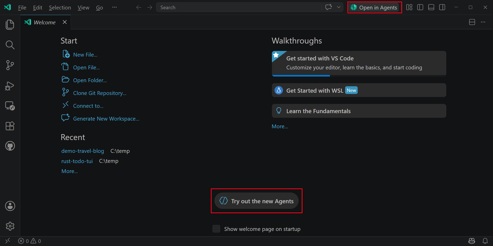
- 从命令行运行
code --agents。 - 在浏览器中打开
代理窗口需要 GitHub 身份验证才能访问你的 Copilot 订阅和会话。如果你已在 VS Code 中登录 GitHub，则在代理窗口打开时也会自动登录。
如果你希望始终留在编辑器窗口中，可以通过右键单击标题栏中的"在代理中打开"按钮并选择隐藏'在代理中打开'来隐藏该按钮。你仍然可以随时从命令面板或命令行打开代理窗口。
界面概览
代理窗口会读取你跨工作区的现有 Copilot CLI、Cloud 和 Claude 代理会话。你可以在不同工作区的代理会话之间切换，而无需在单独的窗口中打开每个工作区。
代理窗口包含以下主要区域：
- 会话列表：位于侧边栏中，你可以在其中查看和管理跨工作区的所有会话。默认情况下，会话按工作区分组。右键单击某个会话可查看更多命令，例如重命名、标记为完成、固定等。
- 自定义面板：位于会话列表下方，你可以在其中访问代理自定义设置，以根据你的工作流和偏好定制代理行为。
- 聊天区域：位于中央，你可以在其中查看聊天对话历史记录，并通过提示与代理进行交互。你可以并排打开多个会话视图以并行比较或审查工作。
- 更改面板：位于右侧，你可以在其中审查代理在会话期间生成的文件更改和其他产出物，并查看工作区的文件资源管理器。
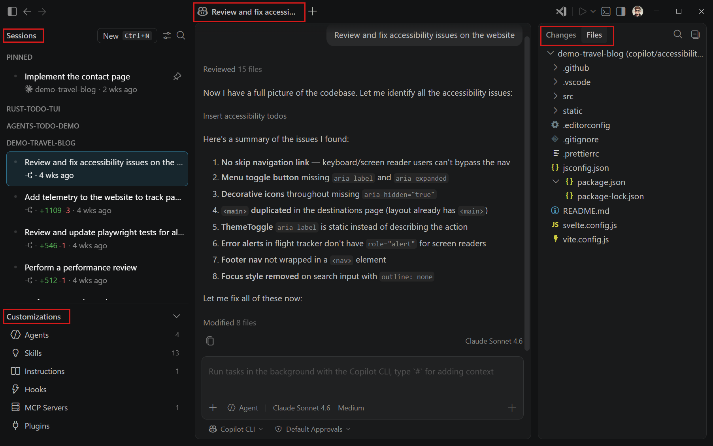
启动代理会话
代理窗口和主 VS Code 窗口共享相同的底层代理会话（Copilot CLI、Copilot Cloud 和 Claude 代理）。这意味着你在代理窗口中启动的任何会话都可以在主 VS Code 窗口中立即使用。
与聊天视图（会话范围限定为打开的工作区）不同，代理窗口允许你在启动会话时选择要针对的工作区或仓库。
要在代理窗口中启动新的代理会话：
- 选择侧边栏顶部的"新建"，或按
kb(workbench.action.chat.newChat)。

- 使用工作区下拉菜单为你的聊天会话选择一个本地文件夹或 GitHub 仓库。
你可以通过将鼠标悬停在会话列表中的工作区上并选择 +（新建会话），直接启动一个限定于特定工作区的会话。
如果你选择的文件夹或仓库尚未受信任，则在启动会话之前，系统会提示你信任该文件夹。
[!TIP]
你可以跟踪和创建通过 SSH 或开发隧道在远程机器上运行的会话。有关详细信息，请参阅远程代理会话。
- 选择工作区后，从下拉菜单中为会话选择代理类型。
可用的代理类型可能因工作区位置而异：
- 文件夹：在 Copilot CLI 或 Claude 代理之间选择。你可以随时选择继续将会话交接给 Copilot Cloud 代理。
- 仓库：在 GitHub 仓库中启动的会话使用 Copilot Cloud 代理。
- （可选）为会话选择额外的配置选项，例如自定义代理、语言模型、权限级别等。
你可以在会话期间的任何时候更改这些设置。详细了解配置代理会话。
- 输入描述你想要完成的任务的提示，然后按
kbstyle(Enter)。
代理现在开始处理你的请求。详细了解在聊天中进行交互。
[!TIP]
要在不离开当前会话的情况下在后台启动会话，请按kbstyle(Alt+Enter)或按住kbstyle(Alt)并选择"发送"。新启动的会话在提交后会出现在会话列表中。
管理你的会话
侧边栏中的会话列表显示你跨工作区的所有进行中的会话。每个会话项都显示关键信息，例如会话名称、工作区、代理类型和文件更改统计信息。
默认情况下，会话按工作区分组，你还可以按时间范围分组。有关使用会话列表的更多详细信息，请参阅管理会话。
当你在列表中选择一个会话时，聊天面板会显示该会话的完整历史记录。该会话随后成为活动会话，更改面板会显示该会话中代理的最新文件更新以及相关工作区中的文件。
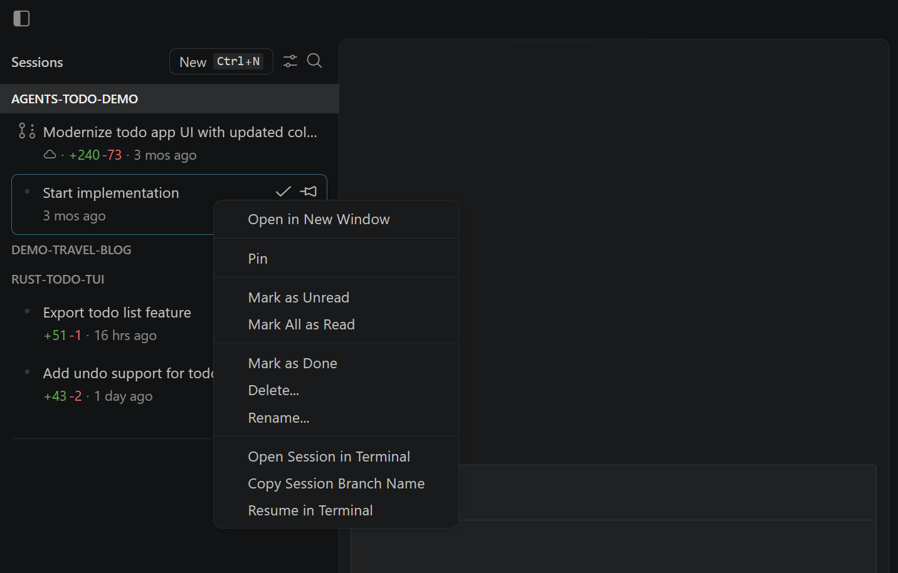
管理和审查文件更改
代理窗口中的"更改"面板提供了一个专用视图，其中包含有关会话期间文件和代理编辑的详细信息。"更改"面板分为两个主要选项卡：
- 文件选项卡：工作区中所有文件的文件资源管理器视图。
- 更改选项卡：由代理更改、添加或删除的文件列表。选择"分支更改"下拉菜单以选择要查看的更改。
要审查代理所做的更改，请在"更改"选项卡中选择一个文件以打开差异视图，该视图显示代理所做的编辑与工作区当前状态之间的比较。
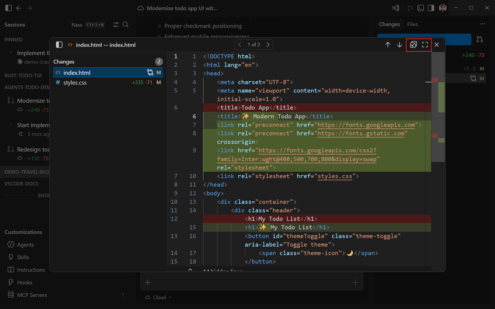
[!TIP]
默认情况下，选择一个文件会打开一个包含会话中所有更改的多文件差异编辑器。要改为打开选定文件的专注单文件差异编辑器，请启用 setting(sessions.changes.openSingleFileDiff) 设置。
你可以在代理窗口内并排打开差异视图与聊天视图，也可以在模态窗口中打开它以专注于更改。使用差异视图工具栏中的布局控件在不同显示模式之间切换。
在差异视图中审查更改时，单击编辑内部，然后选择"添加反馈"以直接在文件中输入反馈注释，并示意代理进行调整。
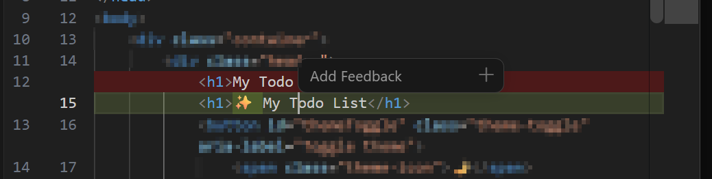
审查更改后，"更改"面板提供以下选项来对代理所做的编辑进行操作：
- 提交：使用文件夹隔离时，将代理所做的更改直接提交到你的工作区。
- 合并：使用工作树隔离时，合并（并可选择同步上游）并创建拉取请求。
- 签出：对于 Copilot Cloud 会话，在本地签出与会话的拉取请求关联的分支以审查或请求进一步编辑。
- 放弃：如果你不想保留某个编辑，可以直接从"更改"面板放弃该编辑。
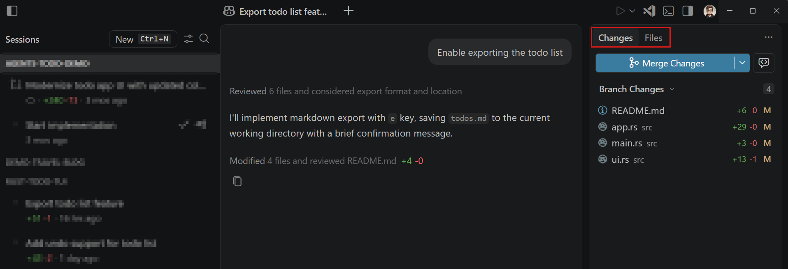
当你创建新会话时，"文件"面板包含一个同步按钮，可让你在代理开始工作之前从基准分支拉取上游更改。这有助于代理从你分支的最新状态开始，并减少在将其更改合并回来时发生合并冲突的几率。
在本地验证代理更改
除了在"更改"面板中审查更改之外，你还可以在提交或合并之前在本地验证代理所做的编辑。代理窗口支持在当前会话的上下文中运行任务和命令。例如，你可以运行构建或测试以确保代理所做的更改不会破坏你的项目，或启动开发服务器以验证编辑在运行环境中是否按预期运行。
要在代理窗口中配置任务：
- 启动或打开一个会话。
- 选择标题栏中的"任务"下拉菜单，然后选择"添加任务"。
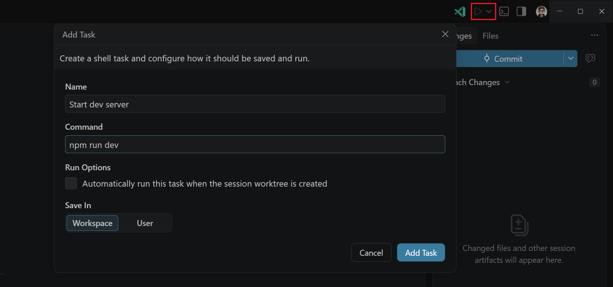
- 提供任务详细信息：
- 名称：任务的描述性名称。
- 命令：任务执行时运行的命令（例如
npm run build或pytest）。 - 运行选项：在创建会话工作树时自动运行任务。
- 保存位置：选择将任务配置保存在工作区中还是用户配置文件中，以便跨项目复用。
- 命令：任务执行时运行的命令（例如
- 名称：任务的描述性名称。
任务配置完成后，它将出现在"任务"下拉菜单中，你可以在当前会话的上下文中运行它以验证代理所做的更改。
如果你的应用程序涉及基于浏览器的行为，你可以在代理窗口中使用集成浏览器。从聊天会话中选择一个 localhost 链接即可在代理窗口内的集成浏览器中打开它。浏览器选项卡将在会话切换期间保持存在，因此如果你打开另一个会话，浏览器选项卡将打开到你之前打开的同一页面，并保留该页面的状态。
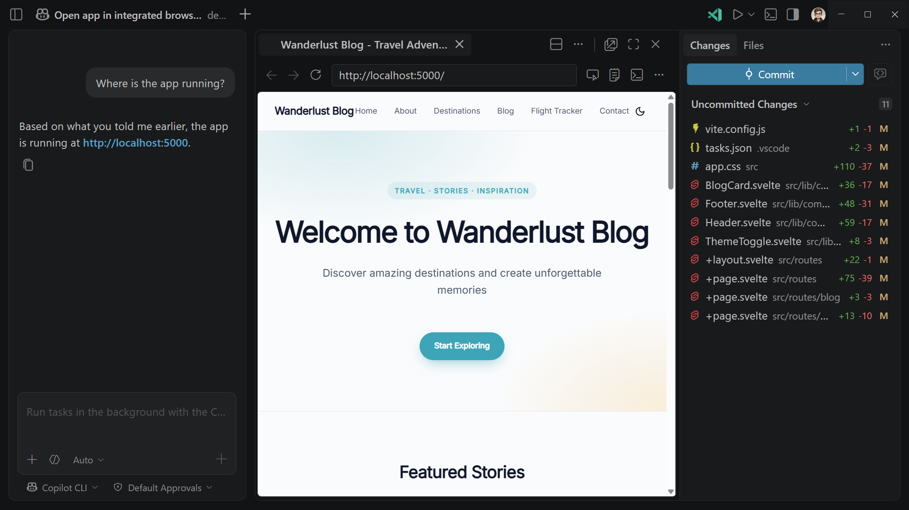
或者，你也可以从集成终端中选择一个 localhost 链接，或通过命令面板 (kb(workbench.action.showCommands)) 中的"打开集成浏览器"命令来打开集成浏览器。你可以使用集成浏览器中的布局控件将其显示为模态窗口或嵌入代理窗口布局中，与其他视图并列。
如果你想在当前会话的上下文中运行终端命令，请选择标题栏中的"打开终端"图标以打开一个集成终端，其当前工作目录设置为会话的文件夹或工作树。
与代理远程协作
代理窗口允许你在远程机器上以及通过任何带有浏览器的设备与代理协作。
- 基于浏览器的访问：打开
- SSH：直接从工作区下拉菜单通过 SSH 连接到远程机器。代理窗口会在远程机器上自动安装并启动 VS Code CLI。
- 开发隧道：连接到运行开发隧道的机器以启动会话或查看现有会话。
详细了解如何在远程代理会话中设置和使用远程连接。
创建子会话
当你有一个活动会话时，你可以启动一个子会话，以便在同一工作区内为代理分配一个独立的并行任务。子会话与父会话共享相同的工作区和工作树，但以空白聊天开始。子会话不会继承父会话的对话历史记录。
当你想要在同一项目中处理独立任务而不中断正在进行的会话或从头开始全新会话时，这非常有用。
要创建子会话：
- 在活动会话中，选择窗口标题栏中的"新建子会话"(
+)。
请注意，聊天区域中会出现一个用于子会话的新选项卡，与父会话的选项卡并列。子会话不会作为单独的项目出现在会话列表中。
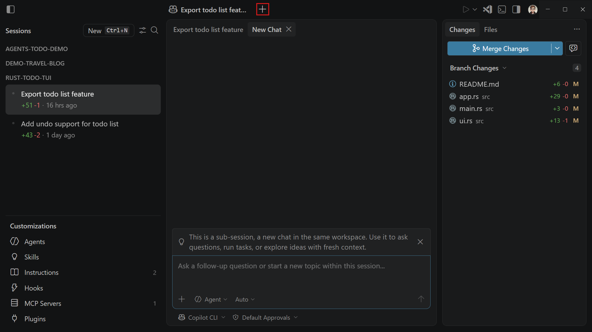
- 输入提示并按
kbstyle(Enter)启动子会话。[!TIP]
要从会话对话中的特定点探索替代方向，请派生会话。派生会话会创建一个新的独立会话，其中包含到特定点为止的对话历史记录副本。
并排打开多个会话
你可以在代理窗口中同时打开多个会话，以比较结果或并行审查工作。使用以下任意方法在活动会话旁边打开一个会话：
- 右键单击会话列表中的某个会话，然后选择"在侧边打开"。
- 将会话从会话列表拖放到视图区域。
- 按住
kbstyle(Alt)并在会话列表中选择一个会话。
任何时候只有一个会话视图处于活动状态。终端、文件和更改视图始终反映活动会话。默认情况下，在会话列表中选择一个会话会替换活动视图。固定某个会话视图（右上角工具栏）可防止其被替换。
当你打开了多个会话时，可以使用键盘快捷键在它们之间切换和管理它们，类似于使用编辑器的方式：
- 按
kb(sessions.focusSessionInGrid1)到kb(sessions.focusSessionInGrid9)可按网格中从左到右的位置聚焦某个会话。 - 按
kb(sessions.closeAllSessions)关闭所有打开的会话并返回到新建会话视图。此快捷键在会话拥有焦点时适用。
这些命令也可以在命令面板 (kb(workbench.action.showCommands)) 中使用。
为你的项目和工作流自定义代理
自定义面板让你可以直接访问所有 AI 自定义选项：
| 自定义项 | 作用 | ||
|---|---|---|---|
| --- | --- | ||
| 代理 | 定义具有特定工具和指令的自定义代理角色。了解更多。 | ||
| 技能 | 添加便携式指令文件夹，代理在相关时加载。了解更多。 | ||
| 指令 | 设置指导 AI 生成代码方式的准则。了解更多。 | ||
| 钩子 | 在代理会话的生命周期点运行 shell 命令。了解更多。 | ||
| MCP 服务器 | 通过 MCP 标准将 AI 连接到外部工具和服务。了解更多。 | ||
| 插件 | 安装预打包的自定义捆绑包。了解更多。 |
代理自定义面板使你能够在一个地方轻松管理所有自定义设置：
- 查看和编辑项目（工作区）或跨所有项目（用户）的现有自定义设置。
- 使用内置编辑器或通过提示生成来添加新的自定义设置。
- 从市场安装插件或 MCP 服务器。
- 启用或禁用自定义设置而无需移除它们。
使用代理自定义面板左上角的下拉菜单选择自定义设置应应用于哪个代理。
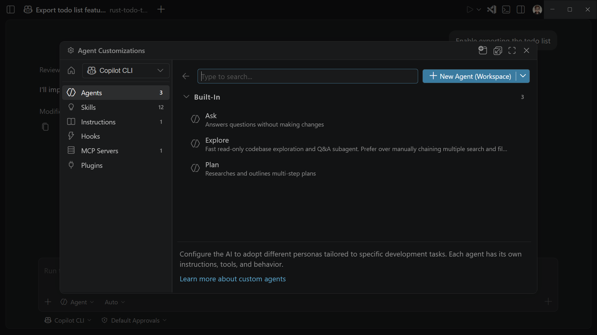
信任文件夹
当你首次在代理窗口中打开一个新的文件夹或仓库时，系统会提示你信任该文件夹及其子文件夹。文件夹信任是一项安全措施，可防止代理在不受信任的文件夹中运行，因为这可能导致恶意代码在你的机器上执行。
如果你选择不信任该文件夹，则无法在代理窗口中为该文件夹启动或继续代理会话。
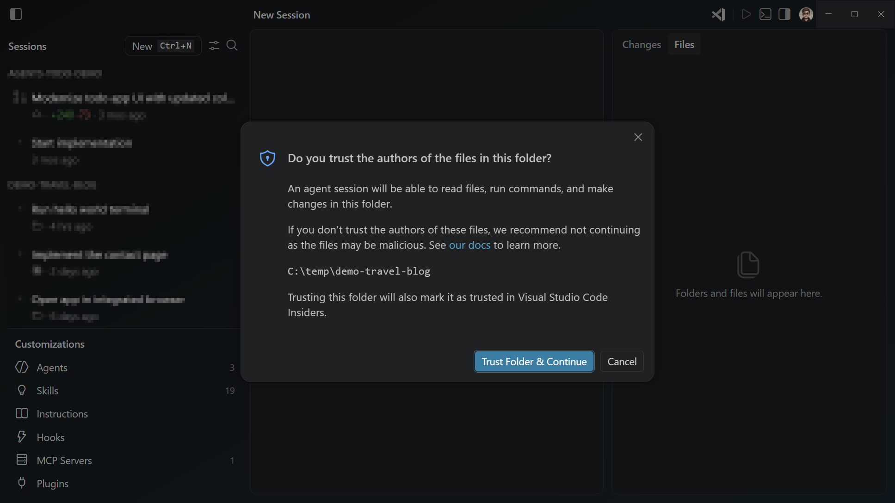
代理窗口与主 VS Code 窗口共享相同的工作区信任状态。如果你在 VS Code 中信任某个文件夹，则在代理窗口中也会受信任，反之亦然。有关工作区信任的更多信息，请参阅工作区信任文档。
切换到另一个 GitHub 帐户
要在代理窗口中使用不同的 GitHub 帐户，请选择窗口右上角的帐户图标，然后选择"注销"。注销后，选择"登录"以使用其他 GitHub 帐户进行身份验证。
配置代理窗口的设置
代理窗口共享你的所有 VS Code 设置，因此你已经投入的配置会自动继承。当你希望代理窗口中的行为与编辑器窗口不同时，你可以仅为代理窗口覆盖特定设置，而不会影响你的主 VS Code 设置。
要仅为代理窗口覆盖某个设置，请编辑你的设置文件，并将值限定在代理窗口部分下。从代理窗口中打开设置编辑器 (kb(workbench.action.openSettings)) 以查看设置应用于哪个范围。
在代理窗口中使用 VS Code 扩展
代理窗口可以运行你的 VS Code 扩展，因此你可以将你依赖的工具带入以代理为先的工作流中。
仅提供静态内容的扩展（例如主题、语法、语言和键绑定）会自动在代理窗口中激活。我们还测试了排名前 100 的市场扩展，其中一些在安装到你的默认 VS Code 配置文件时也会激活。
对于其他扩展，你可以通过 ID 使用 setting(extensions.supportAgentsWindow) 设置来选择启用它们：
"extensions.supportAgentsWindow": {
"myextension.id": true
}启用扩展时请注意以下几点：
- 你以此方式启用的任何扩展都必须安装在你的默认 VS Code 配置文件中。
- 扩展支持仍在发展中。如果某个扩展在代理窗口中的行为不符合预期，请提交问题以便我们讨论。
如果你是一名扩展作者，我们很乐意就代理窗口中的扩展启用所解锁的可能性进行合作。无论你是想构思利用跨项目运行代理的新场景，还是分享你现有扩展在代理窗口中的行为反馈，请通过 GitHub 问题分享反馈和想法。
限制
- 目前代理无法直接为你打开集成浏览器。你可以从命令面板（浏览器：打开集成浏览器）或通过在代理窗口中选择
localhost链接来启动集成浏览器。 - 代理窗口目前仅支持以下代理类型：Copilot CLI、Copilot Cloud 和 Claude 代理。要使用本地或其他第三方代理，请从主 VS Code 窗口管理你的会话。
- Copilot Cloud 会话仅支持 GitHub 托管的仓库。对于非 GitHub 项目，你仍然可以在代理窗口中使用 Copilot CLI。
- 代理下拉菜单目前没有计划代理。你仍然可以在 Copilot CLI 或 Claude 代理会话中使用
/plan命令。在 Copilot CLI 会话中，当你在提示中提到要求创建计划时，计划代理也会自动调用。 - 子会话目前尚不支持 Claude 代理会话。
- 代理窗口目前尚不支持多根会话。你可以在单个会话中要求代理跨项目工作。
常见问题解答
当你想要在 VS Code 中获得精简的、以代理为先的工作流时，请使用代理窗口。它提供了一个专注的界面，围绕跨多个项目端到端地编排代理（验证、审查、拉取请求）而构建，并将代理自定义（插件、技能、MCP）置于核心位置。
当你想要拥有包含调试、笔记本、扩展生态系统和远程开发的完整功能编辑器，其中 AI 辅助你的编码而非作为核心体验时，请使用主 VS Code 窗口。
两种界面都支持代理式开发：代理窗口专为此目的而构建，而主 VS Code 窗口则在提供其他所有功能的同时提供此功能。
是的，在主 VS Code 窗口中使用受支持的代理类型（Copilot CLI、Copilot Cloud 和 Claude 代理）启动的会话会自动出现在代理窗口中。你可以在两种界面之间切换，而不会丢失任何会话历史记录或上下文。
代理窗口目前仅支持 Copilot CLI、Copilot Cloud 和 Claude 代理的会话。如果你使用本地或第三方 CLI 代理，你仍然可以从主 VS Code 窗口管理这些会话，但它们暂时不会出现在代理窗口中。
默认情况下，来自代理窗口的 Copilot CLI 会话是使用 Git 工作树隔离创建的。这意味着代理在由 Git 工作树创建的独立文件夹中操作，这会使更改与你的主工作区隔离，直到你准备好合并它们。这允许你在将代理的更改集成到主代码库之前审查和测试它们。
你可以将工作树从代理窗口合并回你的主工作区，或创建一个拉取请求来审查更改。
代理窗口内置于 VS Code Insiders 中，并随之一同更新。无需额外安装或设置。
是的。你可以通过代理窗口右上角的运行菜单访问集成浏览器，运行命令浏览器：打开集成浏览器，或在代理窗口中选择一个 localhost 链接来打开集成浏览器。